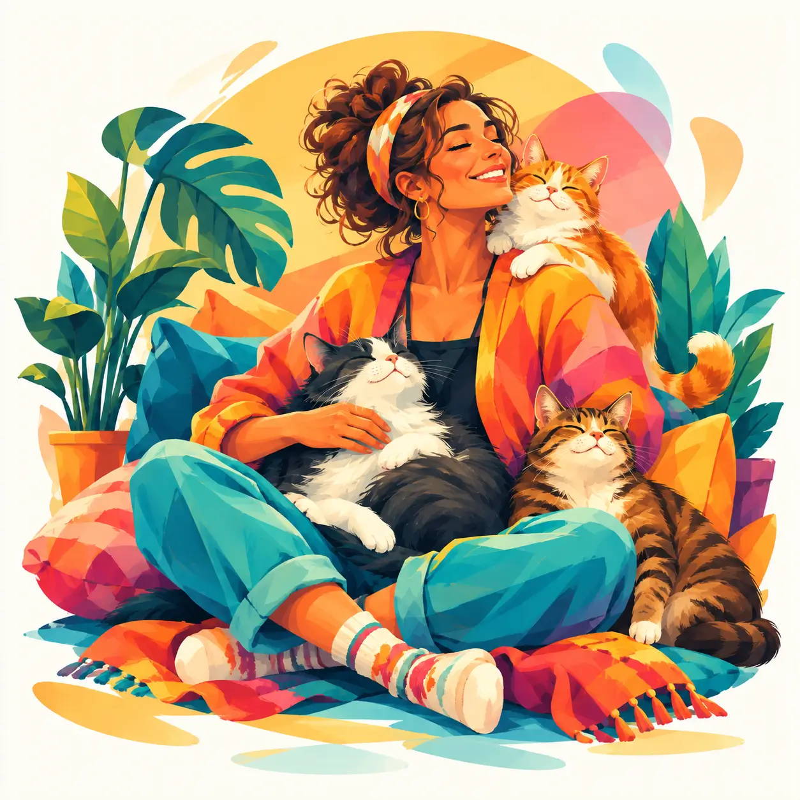
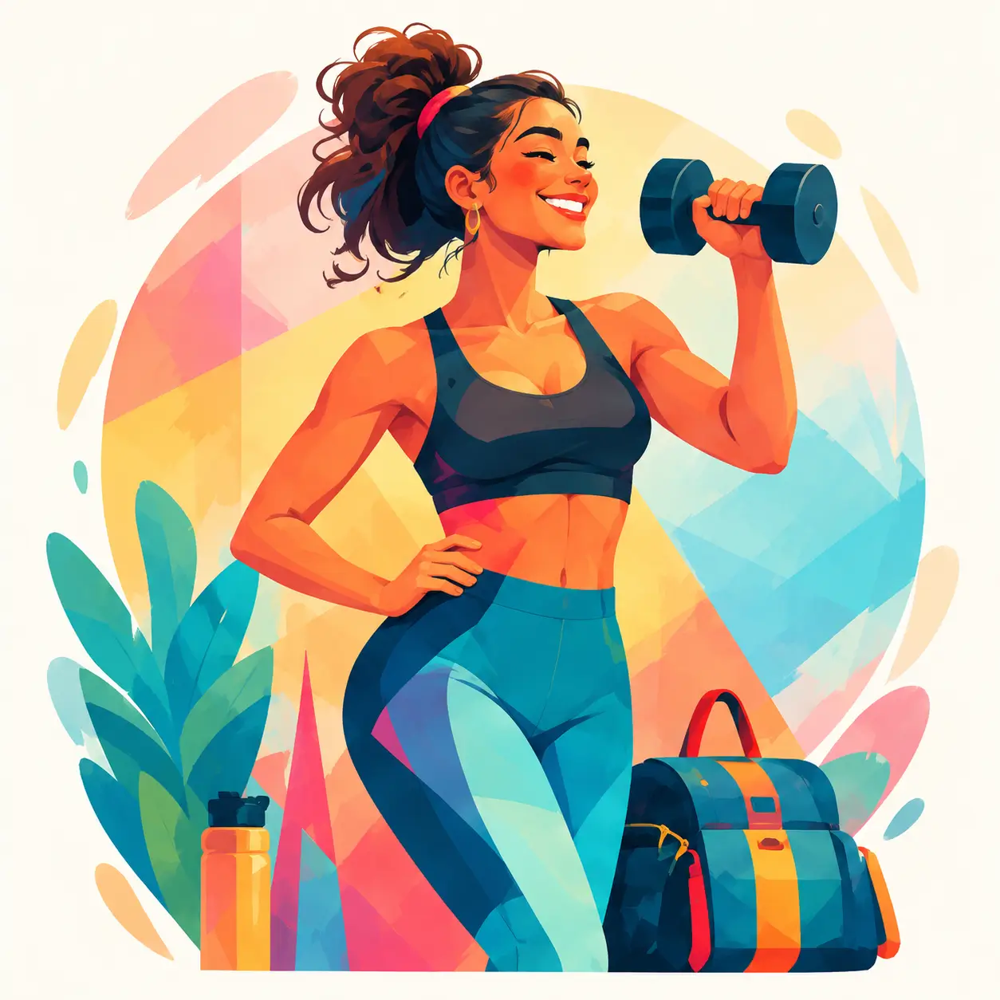

INDEPENDENT PRODUCT · ILLUSTRATION STUDIES · LIVE
A little crisis.
A complete product.
Which Midlife Crisis Are You?
What began as an illustration project during my studies became a complete interactive product. I developed a cast of expressive characters, designed a reflective question flow, and created logic that connects patterns in emotional habits and everyday reactions to 17 playful archetypes.
- My contribution
- Concept, UX flow, content and visual direction, scoring design, AI-assisted implementation and launch
- Product
- Responsive web · 12 questions · 17 illustrated outcomes
- Status
- Launched on GitHub Pages · audience impact to be measured



01 / THE IDEA
From learning illustrations to designing an experience.
As part of my illustration studies, I explored how a consistent character style could express different personalities, interests and ways of approaching a new chapter in life. I guided AI-assisted image creation, selected the characters, and refined the visual direction into a cohesive set of assets.
I wanted the illustrations to become something people could interact with. The idea grew into a warm, humorous quiz about midlife reinvention: a small moment of self-reflection, followed by a character people might recognise themselves in.
02 / EMOTIONAL HABITS & REACTIONS
Start with how people respond, then reveal the character.
The questions explore comfort, stress, anger, uncertainty, boundaries, connection and change. Instead of asking people to choose a hobby, I shaped questions around everyday reactions and the kinds of experiences they feel drawn to.
For example, “During a difficult week, what helps you feel like yourself?” offers physical activity, a manageable plan, a kind conversation, or a change of scene. These responses contribute to a pattern across six themes: activation, novelty, sociability, nurturing, structure and autonomy.
The full answer pattern is compared with authored archetype profiles. The result combines an illustration, a humorous line, a balance reminder, a manageable next step and guidance for friends or family.
This is playful reflection, not a validated personality assessment. The themes and scoring are design choices; they do not establish someone's psychological traits.
03 / THE EXPERIENCE
Curiosity carries the journey.
- StartA clear invitation and a two-to-three-minute expectation.
- ReflectTwelve questions, with progress and the ability to revisit answers.
- DiscoverAn illustrated result with humour and practical suggestions.
- ShareA result link that invites someone else to take their own quiz.
Other archetypes become available after completion. Keeping the initial journey focused preserves the surprise and avoids making the quiz a gallery of results to choose from.
Answers stay in the browser session; shared links contain only the archetype identifier. Visitors can share a result without sharing their individual responses.
04 / FROM DESIGN TO LAUNCH
AI accelerated delivery. Design judgement shaped the product.
I used AI tools to support illustration exploration and implementation, while directing the concept, tone, experience and result logic. The project connected content, artwork, responsive UI, scoring and publication into one working product.
A scoring audit revealed that an early calculation over-selected a moderate profile. The implementation was adjusted to compare normalised answer patterns. Automated checks cover all 17 reachable outcomes, repeatable results, valid answer paths and result links. These checks verify software behaviour; they do not validate the quiz psychologically.
The launch includes individual result pages and social-sharing previews. Focused accessibility checks covered text and primary-button contrast, keyboard navigation, visible focus, mobile reflow and reduced motion. A full screen-reader audit remains a next step.
05 / MARKETING HYPOTHESIS
“What does this say about me?”
The quiz is intended for marketing use. My hypothesis is that curiosity about ourselves encourages participation, while recognisable illustrations and humorous results encourage sharing. Each shared result creates another entry point into the experience.
That is a hypothesis to test, rather than a claim of proven engagement. Next, I plan to measure quiz starts, completion, question-level drop-off, sharing actions and new starts from shared results. Feedback will also help assess whether results feel understandable, enjoyable and respectful.